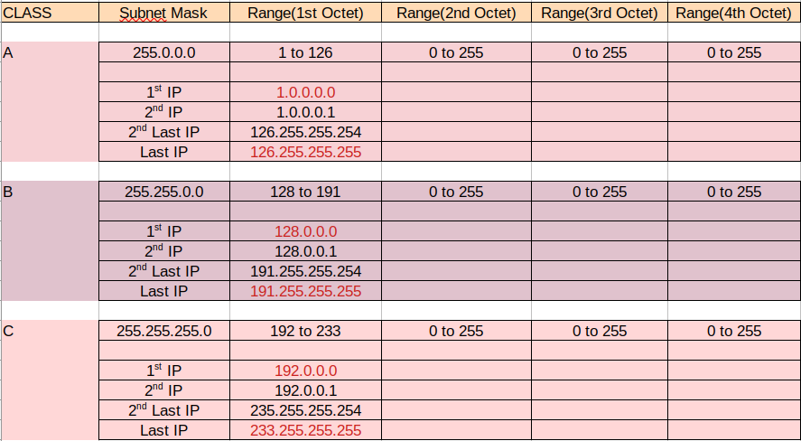
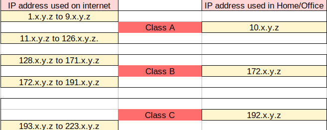
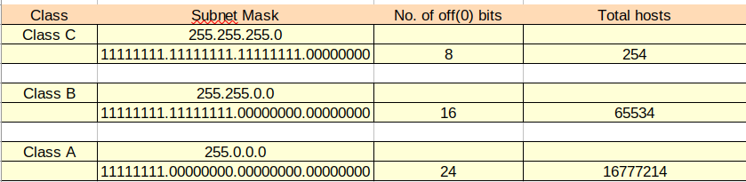
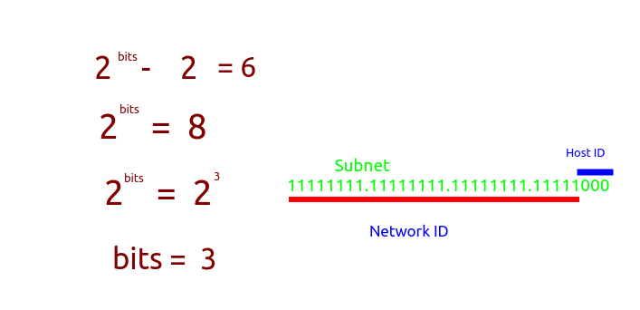
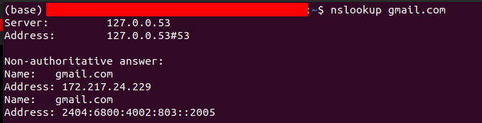

Day_1
Agenda ◇ How IP addressing works
Terms IPv4: It's IP version four madeup of 32 bits
11111111.11111111.11111111.11111111
0.0.0.0 -> 255.255.255.255
~~~~~~~~~~~~~~~~~~~~~~~~~~~~~~~~~
There are major 3 ip address class. A subnet mask defines in which the give IP lies.

Rule Two nodes will communicate with each other without a router if they have same network ID.
In Activity 1 we provided 1.0.0.0(Subnet 255.0.0.0) to one sytem and 1.0.0.2(subnet 255.0.0.0) to another system so the network part is the first octet here which is one in both the cases. Now if we have provided 2.0.0.1 to any one of the system then here one PC ha 1 in network id and another will have 2 in network id part so it will not be possible for then to connect without using router.
~~~~~~~~~~~~~~~~~~~~~~~~~~~~~~~~~

~~~~~~~~~~~~~~~~~~~~~~~~~~~~~~~~~
127.x.y.z is a loop back address used for testing
~~~~~~~~~~~~~~~~~~~~~~~~~~~~~~~~~
How many IP(hots) available in a particular subnet

Scenerio/
Problem: Let's say we have only 6 computers so now we only need 6 ips only so if we choose any of the subnets mentioned above then it will waste the rest of the IP's.
We could have used the class C for these 6 devices but then whenever this system will comeup then it will search for 254 hots which will create unnecessary traffic in the network.
Sol:

Commands Windows ◇ ipconfig : gives IP address
◇ netstat -r : gives routing table
◇ nslookup <url> : To see the ip of a website

◇ a
Resources https://www.netacad.com/portal/resources/packet-tracer // To download netacad
https://www.nirsoft.net/countryip/ //To see which IP is given to which country